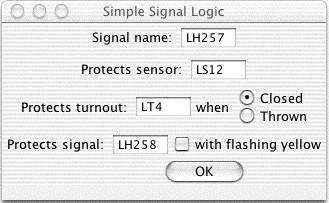

JMRI: Signaling
Modeling railroad signaling on a layout can be done many different ways, ranging from "stoplights" to complete emulation of a particular prototype's signaling logic.JMRI provides several different things that can help with this:
- The JMRI "Signal Table" tool lets you control the appearance of individual signals on your layout. This can be useful for debugging, for example.
- The JMRI "Simple Signal Logic" tool can provide simple versions of block and interlocking signaling.
- The JMRI Automation classes makes it easy to code your own signal logic into the program. This is how Nick Kulp's Cornwall Railroad was signalled.
- JMRI scripting provides a comprehensive programming capability.
- JMRI provides a complete toolkit to make it easy to do any kind of automation on your layout by writing a new program of your own.
There's more information on each of these below. As you move down that list, the task becomes more and more technical, but you have more freedom to model exactly what you want.
In addition, there are people working on more advanced signaling
logic within the JMRI project. Although it's too early to talk
in detail, the idea is to provide ways of driving semi-prototypical
signaling logic, including CTC dispatching and interlocking,
without requiring the user to write any Java code. The
jmriusers discussion group
will have more info on this as it becomes available.
Signal Table
 All the signals that JMRI knows about can be referenced
using the "Signal Table" tool in the Tools menu of most JMRI programs.
All the signals that JMRI knows about can be referenced
using the "Signal Table" tool in the Tools menu of most JMRI programs.
As the signal changes, for whatever reason, the current appearance will show in the table. You can also click on the appearance button to cycle through red, yellow and green.
If you're interested in having your signals carry "human readable" names, you can click in the "user name" column and change that information to whatever you want.
To define a new signal, click on the "Add.." button. It will prompt you for the type (run off turnout outputs; SE8c; etc), and whatever setup information is needed.
This information is saved with the configuration in an XML file, along
with control panel setup and similar stuff. For more information
on creating and displaying panels, including how to show signals,
please see the
Panels pages
and the pages on the
Cornwall Railroad control panel.
Simple Signal Logic

Much of basic signaling can be boiled down to "a signal goes red when a train
can't safely enter the block it protects; it goes yellow when the following
block can't be entered". Although that's a simplication, it can serve
as a powerful starting point for signaling logic.
{kind=link}
The Simple Signal Logic tool allows you to configure JMRI to use that type of logic to set the appearance of a signal. Using the panel, you enter information on:
- The signal being driven
- Which sensor (occupancy detector) covers the block past the signal; when that sensor shows "active" the signal will be set to red
- If the block contains a trailing point turnout, configure the turnout name and whether you're entering the closed or thrown leg; the signal will be set red when the turnout is set against this track
- And the next signal that the train will reach; the signal will be set yellow if the next signal is red. If the checkbox is checked, the signal will be set flashing yellow (not all types can show that!) if the next signal is yellow, thereby giving four-block signaling.
A worked-out example is available on a separate page.
It's clear that this won't cover complicated interlockings
and similar situations, nor will it cover the speed-signaling
seen on some prototypes. But for simple block and route
signaling, it will do pretty well.
Automation classes
JMRI provides classes to help you write Java code to control
your layout. The most powerful of these are aimed
at general automation; see the
automation web page.
The
"Siglet" class
and it's kin are meant to make it
easy to write signal logic; a varient of these was used
for the Cornwall Railroad.
Although these require writing code, instead of just filling
out a GUI form, the program handles all of the details of reading
status changes from the layout, writing desired aspect changes
back to the layout, and even the details of "which outputs do I have
to set to get signal Apple Siding East to show yellow?". You can
concentrate on just the signal logic in the code you write.
Toolkit
The entire
JMRI toolkit
is available for use if you really want to do something
in detail. JMRI provides control of most DCC and C/MRI systems,
with useful tools for manipulating turnouts, sensors, signals, locomotives,
etc as well as powerful tools for working on the user screen.
Thanks and congratulations to all who contributed!
Copyright © 1997 - 2004 JMRI Community.
JMRI, DecoderPro, PanelPro, DispatcherPro and associated logos are our trademarks.
Additional information on copyright, trademarks and licenses is linked here.
Site hosted by: